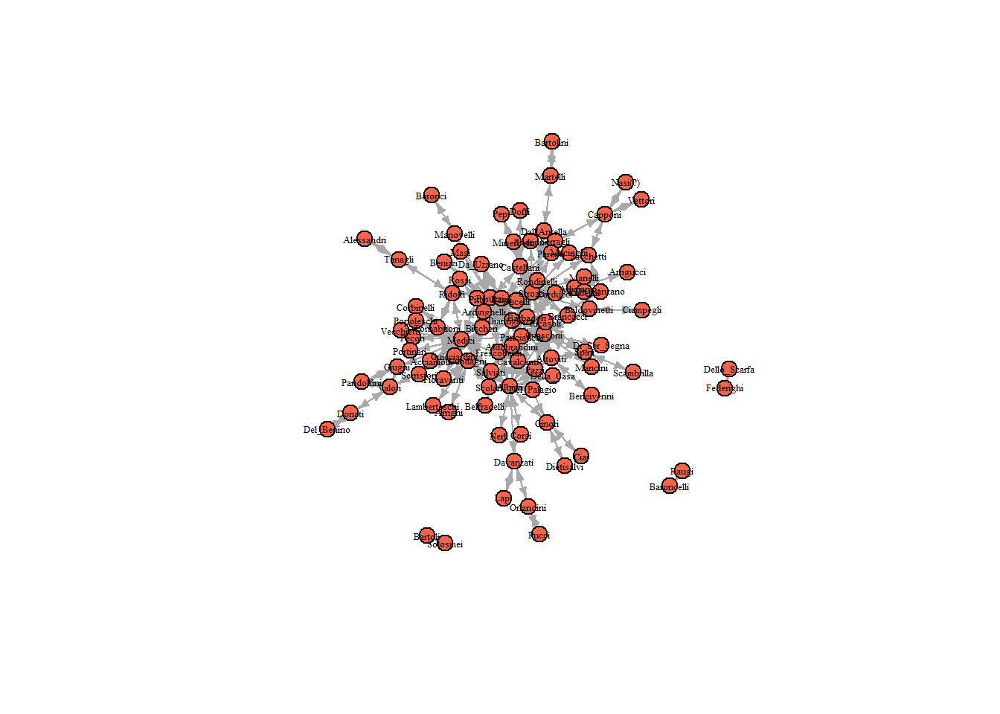
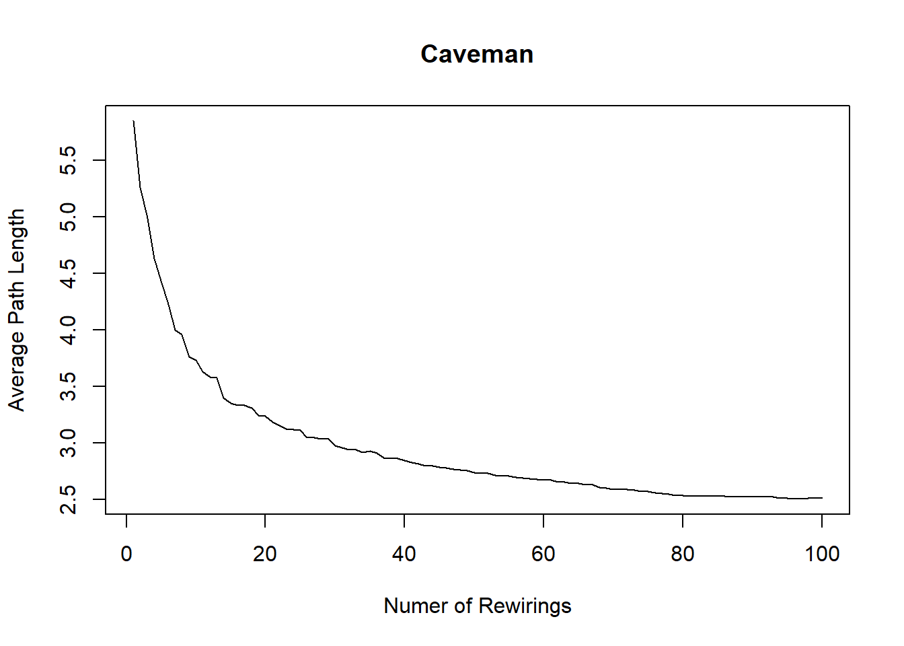
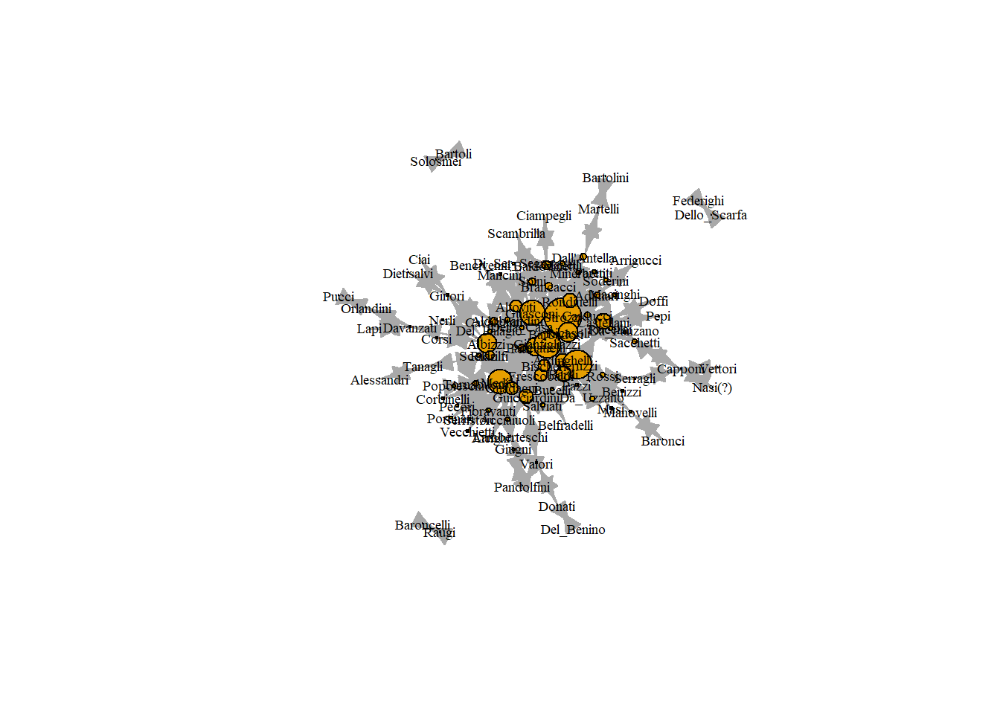

Chapter 6 중심성 (Centrality)
중심성이란, 네트워크 구조 안에서 행위자가 얼마나 중심적인 위치를 차지하고 있는지를 나타내는 지표이다. 즉, 네트워크 내에서 행위자의 중요도를 측정할 때 사용한다. 중심성 또는 중요도를 정의하는 방식이 다양한 것만큼, 중심성 지표의 조작화 방식 또한 매우 다양하다. 이 튜토리얼에서는 네 가지 대표적인 중심성 척도를 다룬다: 연결중심성(degree), 매개중심성(betweenness), 근접중심성(closeness), 그리고 위세 또는 아이겐벡터(eigenvector). 각각의 중심성 척도마다 장단이 있어서 맥락에 따라 적합한 척도를 선택하는 것이 중요하다.
중심성 척도는 주어진 네트워크의 연결(ties)이 얼마나 특정 노드에 집중되어 있는지를 측정한다. 연결 분포(degree distribution)를 통해서 네트워크가 얼마나 불균등(unequal)한지도 살펴볼 수 있다.
6.1 예시 네트워크 불러오기 (Loading the example network)
우선 필요한 패키지를 R에 불러와라.
library(igraph)
library(tidyverse)
library(reshape2)데이터는 John Padgett의 Florentine Families 데이터셋을 사용할 것이다. 이 데이터는 15세기 이탈리아에서 메디치가가 어떻게 정치 권력을 축적해 나갔는지를 살펴보기 위한 데이터이다. 메디치가 사람들의 여러 관계 중에서도 우리는 특히 혼인 관계에 집중할 것이다. 가족 간 연결(tie)은 한 가족의 딸이 다른 가족의 아들과의 혼인을 위해 보내졌을 때 그려진다고 하자(즉, 방향성이 있는 네트워크).
데이터는 Hoffman 교수의 깃헙에서 바로 불러오자. 결혼 관계를 나타내는 인접행렬과, 특성(attirbutes) 관련 데이터를 각각 저장하라.
# prepare the marriage adjacency matrix
florentine_edj <- read.csv("https://raw.githubusercontent.com/mahoffman/stanford_networks/main/data/florentine_marriage_edgelist.csv")
florentine_edj <- florentine_edj[,2:3]
# prepare the attributes file
florentine_attributes <- read.csv("https://raw.githubusercontent.com/mahoffman/stanford_networks/main/data/florentine_attributes.csv")인접행렬은 현재 데이터프레임 구조를 갖고 있기 때문에, 우선 행렬로 변환하여 graph.edgelist() 함수를 통해 엣지리스트로 만들어주자. 이제 혼인 네트워크가 생성되었다.
marriageNet <- graph.edgelist(as.matrix(florentine_edj), directed = T)
marriageNet## IGRAPH 51c0265 DN-- 96 314 --
## + attr: name (v/c)
## + edges from 51c0265 (vertex names):
## [1] Acciaiuoli ->Guicciardini Acciaiuoli ->Medici
## [3] Adimari ->Arrigucci Adimari ->Barbadori
## [5] Adimari ->Strozzi Albizzi ->Altoviti
## [7] Albizzi ->Della_Casa Albizzi ->Corsi
## [9] Albizzi ->Davanzati Albizzi ->Frescobaldi
## [11] Albizzi ->Ginori Albizzi ->Guadagni
## [13] Albizzi ->Guasconi Albizzi ->Guicciardini
## [15] Albizzi ->Medici Albizzi ->Nerli
## + ... omitted several edges이 네트워크에 특성 변수들을 추가해보자. 먼저, 노드(가문)의 부(Wealth) 변수를 만들기 위해 네트워크 노드의 이름(가문 명)과 특성 데이터(florentine_attributes)의 가문(Family) 변수 값이 일치하는 경우의 총 부(GWealth) 변수 값을 추출한다.
V(marriageNet)$Wealth <- florentine_attributes$Gwealth[match(V(marriageNet)$name, florentine_attributes$Family)]
summary(V(marriageNet)$Wealth)## Min. 1st Qu. Median Mean 3rd Qu. Max. NA's
## 148 12884 27394 41683 54724 296250 18NA 값이 있으므로 결측치는 평균 값으로 대체(simple mean imputation)하자.
V(marriageNet)$Wealth <- ifelse(is.na(V(marriageNet)$Wealth), mean(V(marriageNet)$Wealth, na.rm = T), V(marriageNet)$Wealth)
summary(V(marriageNet)$Wealth)## Min. 1st Qu. Median Mean 3rd Qu. Max.
## 148 17014 35505 41683 46610 296250다음은 당시에 피렌체를 통치했던 시의회(The Priorate) 소속 멤버(Priors)가 몇 명인지 알려주는 Priorates 변수를 추가하자. 1282년부터 1344년까지 기간 동안 각 가문에서 총 몇 명이 시의원이었는지 계산함으로써, 장기적/집합 수준에서 가문의 정치적 영향력을 측정할 수 있다.
V(marriageNet)$Priorates <- florentine_attributes$Npriors[match(V(marriageNet)$name, florentine_attributes$Family)]시각화 해보자.
plot(marriageNet, vertex.size = 8, vertex.label.cex = .4, vertex.label.color = "black", vertex.color = "tomato", edge.arrow.size = 0.4)
6.2 연결중심성(Degree Centrality)
연결중심성은 가장 단순한 중심성 척도로, 각 노드가 얼마나 많은 엣지를 갖는지를 계산한 값이다. 즉, 가장 중심성이 높은 노드는 가장 많은 연결(ties)을 가지고 있는 노드다.
주의: 방향성이 있는 네트워크에서는 in 또는 out ties 중 어느 것을 계산에 포함할지 명시해야 한다. 만약 in-degree, out-degree 둘 다 계산에 포함한다면, 그냥 degree라고 부른다.
연결중심성은 R의 degree()함수를 통해 계산할 수 있다.
degree(marriageNet) ## Acciaiuoli Guicciardini Medici Adimari Arrigucci
## 4 14 40 6 2
## Barbadori Strozzi Albizzi Altoviti Della_Casa
## 14 50 28 12 4
## Corsi Davanzati Frescobaldi Ginori Guadagni
## 2 6 12 8 20
## Guasconi Nerli Del_Palagio Panciatichi Scolari
## 24 2 4 14 6
## Aldobrandini Alessandri Tanagli Bencivenni Gianfigliazzi
## 4 2 4 2 20
## Spini Dall'Antella Martelli Rondinelli Ardinghelli
## 8 6 4 10 10
## Peruzzi Rossi Arrighi Baldovinetti Ciampegli
## 30 4 2 8 2
## Manelli Carducci Castellani Ricasoli Bardi
## 4 4 14 20 14
## Bucelli Serragli Da_Uzzano Baroncelli Raugi
## 4 4 4 2 2
## Baronci Manovelli Bartoli Solosmei Bartolini
## 2 4 2 2 2
## Belfradelli Del_Benino Donati Benizzi Bischeri
## 2 2 4 2 8
## Brancacci Capponi Nasi(?) Sacchetti Vettori
## 4 8 2 6 2
## Doffi Pepi Cavalcanti Ciai Corbinelli
## 2 2 6 2 2
## Lapi Orlandini Dietisalvi Valori Federighi
## 2 4 2 8 2
## Dello_Scarfa Fioravanti Salviati Giugni Pandolfini
## 2 4 6 6 4
## Lamberteschi Tornabuoni Mancini Di_Ser_Segna Macinghi
## 2 8 2 2 2
## Masi Pecori Pitti Popoleschi Portinari
## 2 2 4 4 2
## Ridolfi Serristori Vecchietti Minerbetti Pucci
## 8 2 2 2 2
## Da_Panzano Parenti Pazzi Rucellai Scambrilla
## 4 2 4 2 2
## Soderini
## 2어떤 가문이 가장 연결중심성이 높은가?
이 연결중심성 값들을 새로운 변수로 추가하여, 노드의 크기를 연결중심성에 비례하도록 표시할 수 있다.
V(marriageNet)$degree <- degree(marriageNet) # assignment
plot(marriageNet, vertex.label.cex = .6, vertex.label.color = "black", vertex.size = V(marriageNet)$degree, vertex.label.cex = .2) # sized by degree이때 문제는 연결중심성 값들이 너무 작아서 시각화하는데 어려움이 있다는 것이다. 따라서 비율은 그대로 유지하되 값을 좀 키워 다시 시각화해보자.
plot(marriageNet,
vertex.label.cex = .6,
vertex.label.color = "black",
vertex.size = V(marriageNet)$degree*3)6.3 매개중심성(Betweenness Centrality)
매개중심성은 네트워크 흐름 상 어떤 노드들이 중요한지를 측정한다. 이때 네트워크에서 가장 짧은 경로(shortest paths)를 이용한다. 경로란 인접한 노드들의 나열을 의미한다. 어떤 두 노드가 있을 때 가장 짧은 경로를 찾을 수 있다. 만약 노드 C가 A와 B 사이의 가장 짧은 경로에 놓여 있다면, 노드 C는 노드 A와 B사이의 효율적인 흐름 상 중요한 위치를 차지한다. 달리 말하면, C가 없을 경우 A에서 B로 가는 길이 더 멀어진다는 것이다.
그러므로, 매개중심성은 각 노드가 얼마나 많은 최단 경로 위에 놓여 있는지를 보여준다. 어떤 노드의 매개중심성이 높을수록 네트워크 내 효율적인 흐름 상 중요하다고 볼 수 있다.
매개중심성은 igraph 의 betweenness() 함수를 사용하여 계산할 수 있다.
betweenness(marriageNet, directed = FALSE)## Acciaiuoli Guicciardini Medici Adimari Arrigucci
## 0.000000 327.850305 1029.609288 93.009524 0.000000
## Barbadori Strozzi Albizzi Altoviti Della_Casa
## 162.697344 1369.979110 856.436111 125.620147 11.577398
## Corsi Davanzati Frescobaldi Ginori Guadagni
## 0.000000 260.000000 145.532681 180.571429 277.059921
## Guasconi Nerli Del_Palagio Panciatichi Scolari
## 583.679251 0.000000 0.000000 167.994891 19.801010
## Aldobrandini Alessandri Tanagli Bencivenni Gianfigliazzi
## 23.351190 0.000000 88.000000 0.000000 187.915043
## Spini Dall'Antella Martelli Rondinelli Ardinghelli
## 89.500000 174.000000 88.000000 43.186597 58.278211
## Peruzzi Rossi Arrighi Baldovinetti Ciampegli
## 604.369691 0.000000 0.000000 95.613889 0.000000
## Manelli Carducci Castellani Ricasoli Bardi
## 0.000000 5.009524 194.199423 205.097092 280.248232
## Bucelli Serragli Da_Uzzano Baroncelli Raugi
## 1.066667 81.000000 3.666667 0.000000 0.000000
## Baronci Manovelli Bartoli Solosmei Bartolini
## 0.000000 88.000000 0.000000 0.000000 0.000000
## Belfradelli Del_Benino Donati Benizzi Bischeri
## 0.000000 0.000000 88.000000 0.000000 63.995238
## Brancacci Capponi Nasi(?) Sacchetti Vettori
## 0.000000 177.000000 0.000000 197.651515 0.000000
## Doffi Pepi Cavalcanti Ciai Corbinelli
## 0.000000 0.000000 125.467749 0.000000 0.000000
## Lapi Orlandini Dietisalvi Valori Federighi
## 0.000000 88.000000 0.000000 202.285859 0.000000
## Dello_Scarfa Fioravanti Salviati Giugni Pandolfini
## 0.000000 5.951190 35.571429 96.664141 0.000000
## Lamberteschi Tornabuoni Mancini Di_Ser_Segna Macinghi
## 0.000000 23.831746 0.000000 0.000000 0.000000
## Masi Pecori Pitti Popoleschi Portinari
## 0.000000 0.000000 19.610606 0.000000 0.000000
## Ridolfi Serristori Vecchietti Minerbetti Pucci
## 213.727670 0.000000 0.000000 0.000000 0.000000
## Da_Panzano Parenti Pazzi Rucellai Scambrilla
## 16.961111 0.000000 4.361111 0.000000 0.000000
## Soderini
## 0.000000이 매개중심성 값들을 네트워크 노드의 새로운 변수로 추가하여 노드의 크기를 비례하게 표시할 수 있다.
V(marriageNet)$betweenness <- betweenness(marriageNet, directed = F) # assignment
plot(marriageNet,
vertex.label.cex = .6,
vertex.label.color = "black",
vertex.size = V(marriageNet)$betweenness) # sized by betweenness
매개중심성 값은 매우 크다. 따라서 매개중심성 값에 비례하여 노드 크기를 설정할 때에는 정규화(normalize)해주는 것이 유용하다.
plot(marriageNet,
vertex.label.cex = .6,
vertex.label.color = "black",
vertex.size = V(marriageNet)$betweenness/max(V(marriageNet)$betweenness) * 20)6.4 근접중심성(Closeness Centrality)
근접중심성 척도 또한 노드 간 최단 경로에 기반한 척도이다. 두 노드 간 거리를 최단 경로의 길이(length)로 측정한다. 어떤 노드의 farness는 해당 노드에서 다른 노드들까지의 평균 거리를 의미한다. 따라서 closeness는 farness의 역수이다 (1/farness). 근접중심성은 closeness()함수를 통해 계산 가능하다.
closeness(marriageNet)## Acciaiuoli Guicciardini Medici Adimari Arrigucci
## 0.003610108 0.004424779 0.004926108 0.003846154 0.002873563
## Barbadori Strozzi Albizzi Altoviti Della_Casa
## 0.004115226 0.005128205 0.004672897 0.004065041 0.003676471
## Corsi Davanzati Frescobaldi Ginori Guadagni
## 0.003311258 0.003378378 0.004081633 0.003623188 0.004166667
## Guasconi Nerli Del_Palagio Panciatichi Scolari
## 0.005025126 0.003311258 0.003717472 0.004545455 0.003717472
## Aldobrandini Alessandri Tanagli Bencivenni Gianfigliazzi
## 0.003717472 0.002439024 0.003105590 0.002994012 0.004716981
## Spini Dall'Antella Martelli Rondinelli Ardinghelli
## 0.003676471 0.003597122 0.002747253 0.004098361 0.004255319
## Peruzzi Rossi Arrighi Baldovinetti Ciampegli
## 0.004761905 0.003436426 0.003048780 0.003984064 0.002949853
## Manelli Carducci Castellani Ricasoli Bardi
## 0.003558719 0.003816794 0.004166667 0.004184100 0.004504505
## Bucelli Serragli Da_Uzzano Baroncelli Raugi
## 0.003521127 0.003311258 0.003623188 1.000000000 1.000000000
## Baronci Manovelli Bartoli Solosmei Bartolini
## 0.002604167 0.003378378 1.000000000 1.000000000 0.002212389
## Belfradelli Del_Benino Donati Benizzi Bischeri
## 0.003003003 0.002083333 0.002551020 0.003355705 0.004291845
## Brancacci Capponi Nasi(?) Sacchetti Vettori
## 0.003937008 0.002985075 0.002364066 0.003690037 0.002364066
## Doffi Pepi Cavalcanti Ciai Corbinelli
## 0.003048780 0.003048780 0.004201681 0.002747253 0.003436426
## Lapi Orlandini Dietisalvi Valori Federighi
## 0.002604167 0.002617801 0.002747253 0.003267974 1.000000000
## Dello_Scarfa Fioravanti Salviati Giugni Pandolfini
## 1.000000000 0.003571429 0.003610108 0.003533569 0.002801120
## Lamberteschi Tornabuoni Mancini Di_Ser_Segna Macinghi
## 0.003048780 0.003773585 0.003484321 0.003484321 0.003533569
## Masi Pecori Pitti Popoleschi Portinari
## 0.003355705 0.003436426 0.004098361 0.003484321 0.003436426
## Ridolfi Serristori Vecchietti Minerbetti Pucci
## 0.004237288 0.003436426 0.003436426 0.003533569 0.002127660
## Da_Panzano Parenti Pazzi Rucellai Scambrilla
## 0.003311258 0.003533569 0.003267974 0.003533569 0.002777778
## Soderini
## 0.003533569마찬가지로 네트워크 노드의 새로운 변수로 추가한 후 시각화를 해보자.
V(marriageNet)$closeness <- closeness(marriageNet)plot(marriageNet,
vertex.label.cex = .6,
vertex.label.color = "black",
vertex.size = V(marriageNet)$closeness/max(V(marriageNet)$closeness) * 20)
6.5 위세중심성(Eigenvector Centrality)
연결중심성은 각 노드의 엣지의 개수를 고려할 뿐, 에고의 alters(연결된 타인)에 대한 정보는 고려하지 않는다. 하지만 만약 어떤 사람이 권력 있는 사람들과 연결되어 있다면, 엣지의 개수가 같더라도 차이가 있기 마련이다. 예컨대, 노드 A와 B가 동일한 연결중심성을 가지고 있더라도, A가 연결중심성이 높은 이들과 더 많이 연결되어 있는 반면, B가 연결중심성이 낮은 이들과 주로 연결되어 있다고 가정해보자. 이 경우, A의 중심성이 B보다는 더 높아야 하는 것이 직관적이다.
아이겐벡터 또는 위세중심성은 alters의 권력 또한 고려한다. evcent() 함수를 통해 계산할 수 있는데, 특이하게도 이 함수는 리스트 객체를 반환한다. 우리는 이 리스트에서 벡터만 필요하기 때문에 벡터를 추출하겠다.
evcent(marriageNet)$vector위세중심성 값들을 네트워크 노드의 새로운 변수로 추가한 후 시각화해보자.
V(marriageNet)$eigenvector <- evcent(marriageNet)$vector
plot(marriageNet,
vertex.label.cex = .6,
vertex.label.color = "black",
vertex.size = V(marriageNet)$eigenvector/max(V(marriageNet)$eigenvector) * 20)